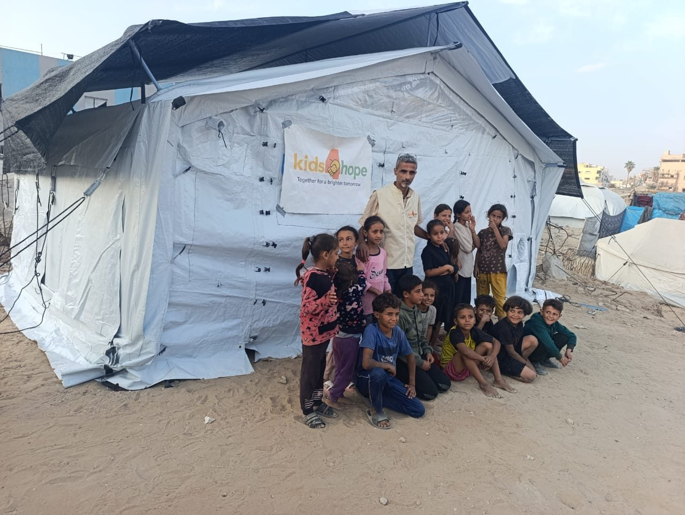
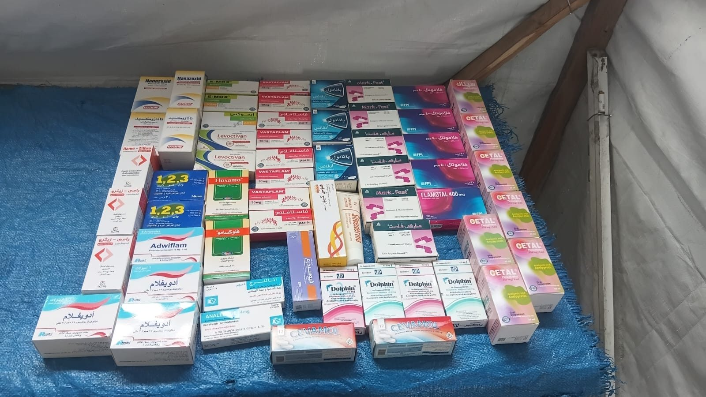
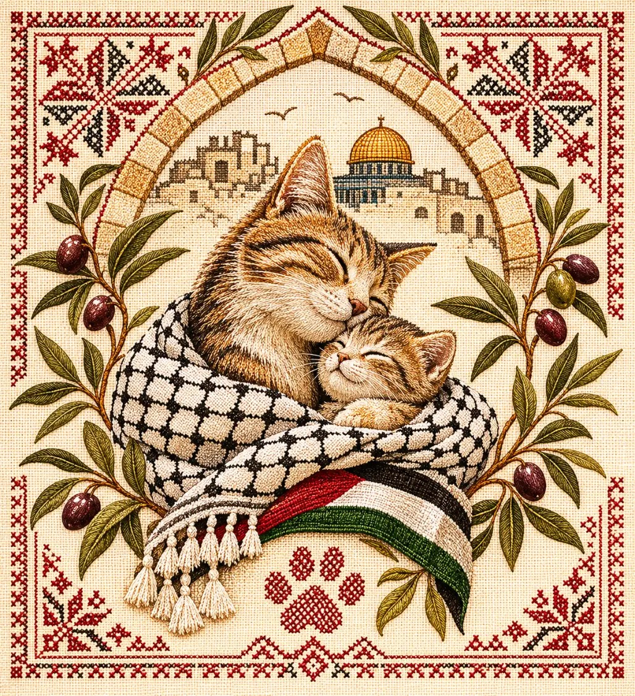

معًا نكون أقوى.
دار الرحمة ترافق مشاريع الإغاثة القائمة على الأرض وتدعمها وتربط بينها – من أجل الناس والحيوانات المحتاجة.
ادعم المشاريع المشاريع في الشبكةعملنا في لمحة
حماية الحيوان في قلب شمال غزة كمشروعنا الخاص – إضافةً إلى مشاريع على الأرض نرافقها وندعمها ونربط بينها. يكفي أن تضغط على بطاقة.
 مشروعنا الخاص
مشروعنا الخاصدار الرحمة Cat Rescue
إنقاذ القطط من تحت الأنقاض ورعايتها وعلاجها عند الطبيب البيطري.
→ شارك معنا
شارك معناكفالة القطط
قطة واحدة. شهر واحد. كفالتك.
→
تقويم الأمنياتPaws of Hope
كل أمنية تُطرِّز جزءًا من الصورة.
→ الوضع
الوضعالقنابل ليست وحدها ما يحصد الأرواح
الأوبئة ومياه الصرف الصحي ونقص الأدوية.
→ في الشبكة
في الشبكةالمشاريع التي نرافقها
Medical Point وKids4Hope وHope4Humanity – في صفحة واحدة.
→ الوضع
الوضعأرقام وحقائق
غزة بالأرقام المجرّدة – مع المصادر.
→ لماذا هناك
لماذا هناكلماذا شمال غزة
هناك تصل أقل مساعدة.
→ من نحن
من نحننحن الشبكة
نرافق وندعم ونربط.
→ فرانكفورت · 2027حفل خيري
ثقافة ولقاء ومساعدة في أمسية واحدة.
→ شارك معناهكذا يمكنك أن تساعد
تبرّع، شارك، انشر جهات الاتصال – كل مساعدة لها قيمتها.
→كل حياة نجمة.
لكل طفل ولكل إنسان ولكل حيوان في غزة يصله العون. المس السماء وأضئ نجمة أمل.
0 نجمة أمل أضأتها.
معًا نكون أقوى
«دار الرحمة» تعني «بيت الرحمة». نحن لا نؤسس مشاريع من الأعلى، بل نقوّي ما يحمله الناس على الأرض منذ زمن.
ما الذي تقدّمه الشبكةالظهور وطرق التبرع والتواصل
- يبقى كل مشروع مستقلًا – باسمه وشعاره وقيادته الخاصة على الأرض.
- نوفّر الظهور وطرق التبرع والتواصل بين المشاريع.
- وهكذا تتشارك المشاريع المعرفة والعلاقات والدعم بدل أن يكافح كل منها وحده.
كيف نعملعلى الأرض · بشفافية · باستقلال
مع الناس على الأرض: لكل مشروع قيادته الخاصة في غزة. نصغي ونقرر معًا ما هو الأكثر إلحاحًا.
بشفافية: مبدأ العينين الأربع، والإيصالات والتقارير. المزيد عن ذلك
باستقلال: الإنسانية والحياد وعدم الانحياز – المساعدة تتبع الحاجة وحدها.
لماذا نفعل ذلكالرحمة لا تعرف حدودًا
يجب ألّا تتوقف الرحمة عند حدّ – لا بين البلدان ولا بين البشر والحيوانات. المساعدة بالنسبة لنا دائرة بين الداخل والخارج، وبين الإنسان والحيوان، وبين العطاء والأخذ. رؤيتنا
شركة UG غير ربحية قيد التأسيسلتبقى المساعدة موثوقة
حتى الآن يتحمّل أفراد المشاريع. ولكي تصبح المساعدة دائمة وقابلة للتتبّع، نحضّر لتأسيس شركة UG غير ربحية. مستجدات التأسيس